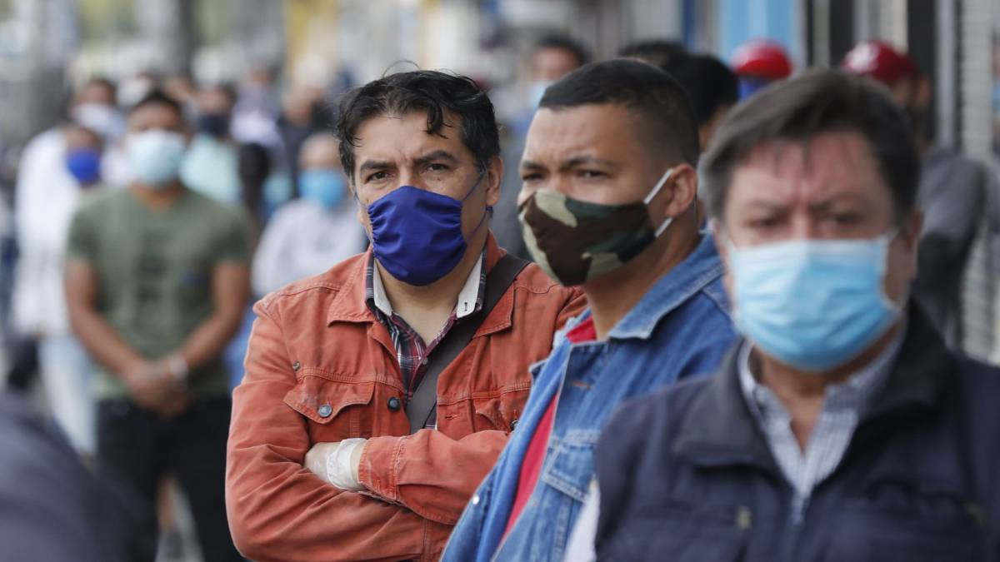
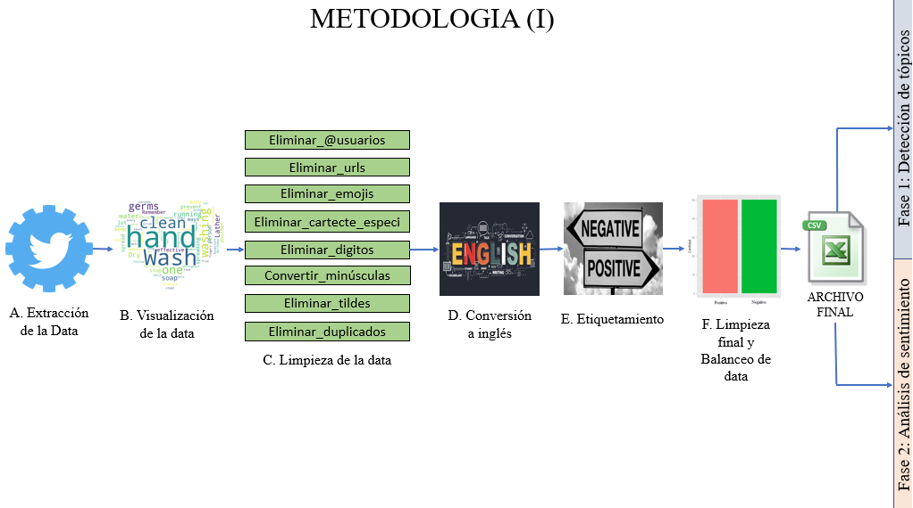
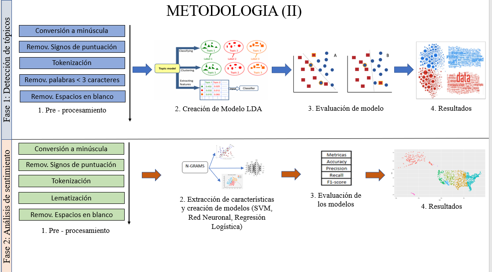
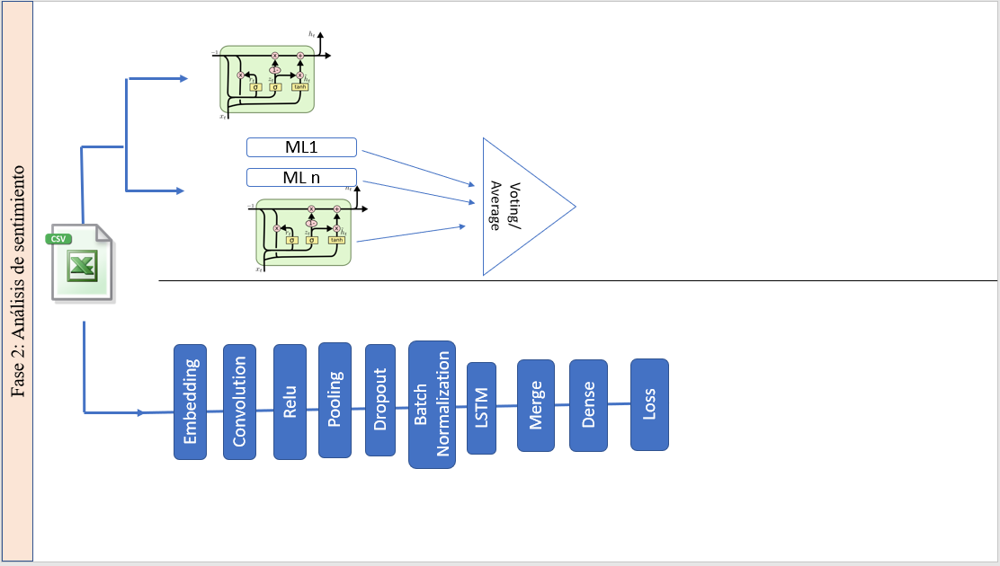
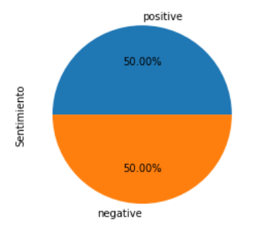
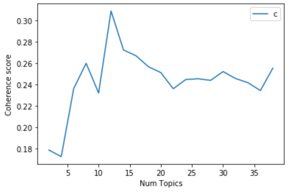
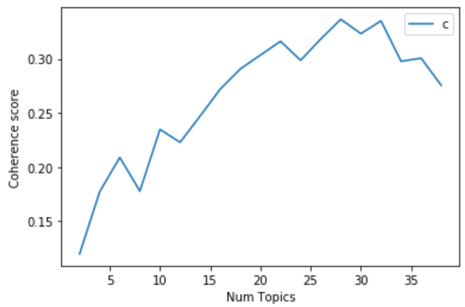
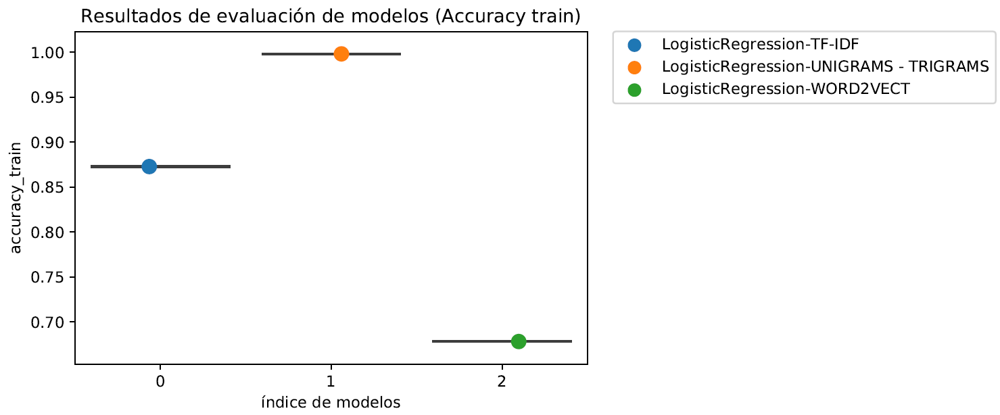
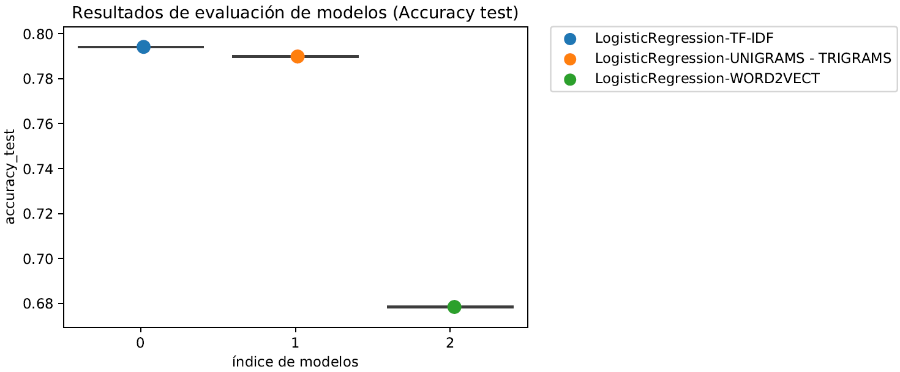

Visualizar artículo completo
Ir al Sistema de detección de tópicos y análisis de sentimiento
Abstract
En el presente documento se extrajeron 3 043 171 tweets con keywords relacionados al coronavirus con el objetivo de desarrollar 3 diferentes modelos de detección de tópicos: Asignación Latente de Dirichlet (LDA), Procesos jerárquicos de Dirichlet (HDP) e Índice Semántico Latente (LSI), de tal modo que se escogió el mejor modelo el cual fue el LDA con 12 tópicos para realizar la detección de tópicos de un determinado tweet (Fase 1). Por otro lado, se crearon 9 modelos de machine learning con 3 clasificadores (Regresión Logística, RandomForest y Red Neuronal) con 3 técnicas de extracción de características diferentes (TF-IDF, Ngrams y Word2vect) con el objetivo de obtener el mejor modelo y poder realizar análisis de sentimiento (Fase 2). El mejor modelo fue la regresión logística con TF-IDF con un accuracy de 79$\%$. Finalmente, se creó un sistema para detectar el tópico al cual pertenece un determinado tweet y el sentimiento que posee en tiempo real.
Introducción
En estos tiempos, alrededor del mundo se están viviendo momentos difíciles por el surgimiento del nuevo coronavirus conocido como Covid-19. Este virus letal surgido en china en diciembre del 2019 tiene a las personas viviendo con un profundo temor hacia esta nueva enfermedad dado que cada día se incrementan el número de contagiados y fallecidos por esta enfermedad. Como medida de prevensión, muchos gobiernos han tomado medidas drásticas con el objetivo de prevenir la propagación de esta enfermedad. Una de las medidas optadas por los países ha sido una cuarententa total con el objetivo de poder disminuir el transito de personas y así evitar la propagación del virus.Dado a lo último mensionado, las personas al estar mucho más tiempo en las casas, han usado las redes sociales para expresar sus emociones con respecto a todas las declaraciones o nuevas medidas optadas por el propio gobierno y con respecto al coronavirus en general.
Dada la cantidad gran cantindad de información que se genera por las personas en estos tiempos de coronavirus, es dificil dar seguimiento a cada uno de los comentarios que se van publicando en las distintas redes sociales como Twitter o Facebook con el objetivo de determinar si las personas estan a favor o en contra con respecto a algún tipo de situación relacionada al coronavirus o de qué tópico suelen estar hablando mucho más en sus comentarios. No obstante, con el surgimiento de nuevas técnicas para el análisis de información y para la detección de tópicos, es posible la realización de un modelo que permita dado un comentario de entrada, poder detectar a qué tópico pertenece y qué tipo de sentimiento tiene (positivo o negativo).
En el presente proyecto se utiliza la técnica de LDA para la detección de tópicos de tweets recolectados de twitter usando hashtags relacionados al coronavirus en el país de Perú. Además, se utiliza una técnica de análisis de sentimientos para la clasificación de los tweets en positivos o negativos. Para la elección de la técnica de análisis de sentimiento a usar, se hace una comparación de tres modelos: 1 modelo de machine learning, 1 modelo de deep learning y un modelo que combine los dos anteriores. Se evaluarán los 3 modelos utilizando el Acuracy, Precision, Recall y F1-score con el objetivo de determinar qué modelo es el más adecuado para realizar el análisis de sentimiento.
Metodología - Recolección de datos
Para la extracción de la data se necesitó contar con una cuenta de desarrollador para usar la API de twitter. Una vez creada la cuenta, se procedió a crear una nueva Twitter Application. Al momento de la creación de nuestra nueva app, se nos otorga principalmente valores para 4 principales campos que son el consumer key, cosumer secret key, access token y el access token secret. Estos 4 campos con sus respectivos valores, servirán de autentificación para poder conectarnos a twitter y poder extraer los tweets más adelante. Posteriormente, se procedió a instalar R junto con R studio versión 1.2.1335 para poder realizar la extracción. Las librerías que se utilizaron fueron "twitterR" para la extracción de los datos , "rtweet" para activar la extracción por zonas específicas y "readr" para la exportación e importacion de archivos. Se procedió a importar las 3 librerías y se proceció a crear 4 variables llamadas api_key, api_secret_key, access_token y access_token_secret en donde cada una almacenaba el valor proporcionado por la aplicación de twitter cuando se creó. Luego, para la autentificación, se utilizó la función setup_twitter_oauth() proporcinada por la librería "twitterR" y dentro de esta función se agregaron las 4 variables mensionadas. Para la extracción de los tweets, se creó una variable llamada "tweets" que almacenaria todos los tweets que se iban extrayendo. La función searchTwitter, permitió hacer la conexión por twitter para realizar la extracción. Además, hubieron otros argumentos que intervinieron en la función de extracción. El primer argumento para la extracción es la propia palabra o hashtag que se desea extraer, como segundo argumento esta la función lookup_coords en donde dentro de esta función proporcionada por la librería "rtweet" se introducía el pais del cual se deseaba hacer la extracción que en este caso es solamente de perú. El siguiente argumento es el n que viene a ser la cantidad de tweets que se desea extraer. Seguidamente, se encuentra el argumento "lang" que es el idioma con el cual se desea que tengan los tweets. En este caso esta variable lleva el valor de "es" porque los tweets serán extraidos en el idioma español. Finalmente están los parámetros de "since" y "until" en donde se introduce desde qué fecha a qué fecha se desea hacer la extracción. Es preciso mensionar que la API de twitter permite hacer la extracción solamente de los 7 últimos días, por lo que se hizo la extracción de manera díaria de 20000 en 20000 tweets utilizando hashtags relacionados al coronavirus como "covid-19", "vacuna", "bono", "QuedateEnCasa" entre otros. Una vez extraidos los tweets, se procedió a convertir los resultados en dataframe con la función twListToDF y almacenado en una nueva variable. Finalmente, con la función write_csv proporcionada por la librería "readr", se exportó el dataframe a un archivo csv cuyo nombre del archivo era el nombre del hashtag con el cual se extrajo para un mejor manero de los archivos. En total, se recopilaron 137874 tweets por un periodo de 6 semanas usando diversos hashtags relacionado a coronavirus en el Perú.
Metodología - Limpieza
Para la limpieza de los datos se utilizaron las librerías re (expresiones regulares) y unidecode y demoji. A continuación detallaremos las funciones utilizadas para la limpieza de los datos. En los tweets se eliminó el prefijo "RT" de todos los tweets que lo tenían, esto se debió a que podría existir la posibilidad de haber extraído retweets pero no su tweet original, por ese motivo nos quedamos con el resto del texto y en caso de estar realmente repetido sería eliminado posteriormente en eliminación de duplicados. En los tweets descargados se tienen menciones iniciando con \@, este tipo de texto no era necesario para las tareas a realizar, por ende, usando la librería re se terminaron eliminando de los tweets.Se usó la librería de expresiones regulares para eliminar los hipervínculos dado que no eran relevantes para este estudio. Para esta función se hizo uso de la librería demoji, la cual requiere de una descarga inicial de datos del repositorio de códigos emoji del Consorcio Unicode, además de la librería re y su módulo replace para hacer reemplazar el emoji a nulo (vacío). En esta función también se utilizó la librería re para quitar todos los caracteres dado que estos eran completamente irrelevantes para este trabajo. Se eliminaron los números o cifras encontradas en cualquier parte del texto a través de la librería re. Dado que pueden existir palabras iguales pero escritas en mayúsculas y minúsculas en toda la data, se decidió homogenizar las palabras. También permitió eliminar errores en la unificación de la información y los posibles retweets que existían como tal dentro de la data. Todas las funciones mencionadas arriba fueron unificadas en una sola para aplicar la limpieza de forma automática a los datos.De esta forma, de los 3043171 de tweets que se tenían, terminaron quedándose 892734 tweets.
Resultados Fase 1 - LDA
Para escoger, el mejor modelo de LDA, se construyeron 4 modelos diferentes. Los 2 primeros modelos fueron con una cantidad de tópicos igual a 10 y que correspondían al modelo de LDA con Doctobow y LDA usando TF-IDF.
1) Modelo tradicional LDA-Doctobow: Para la creación del modelo tradicional de usando Doctobow, se escogio un K = 10 solamente de prueba para verificar un valor inicial del Coherence que nos podía ofrecer. Los resultados de este modelo en particular fueron que obtuvo un Coherence Score de 0.2484 y Perplexity de -8.1315. 2) Modelo tradicional LDA-TF-DFI: Para realizar el modelo de TF-IDF, se transformó el corpus de Doctobow, de tal manera que se obtuvo un nuevo corpus que posea el identificador de cada palabra con su respectivo peso asignado. De igual manera, este modelo se realizó con un K = 10 de prueba para poder tener una idea de los valores resultantes que podrian salir. Con respecto a su Coherence Score fue de 0.2556 y de Perplexity fue de -9.4336. Analizando los dos primeros modelos tradicionales, se observa que en términos de Coherence Score, el modelo de LDA-TF-DFI es mejor que el modelo de LDA-DoctoBow con una diferencia mínima. Por otro lado, en términos de Perplexity, el modelo de LDA con TDF-IDF es mejor que el modelo de LDA-DoctoBow dado que posee el valor de su Perplexity es más negativa. 3) Modelo Mejorado LDA-Doctobow: Para realizar el primer modelo mejorado de LDA, usando Doctobow se construyó una función que construyó 19 modelos de LDA-Doctobow, obteniendo el Coherence Score de cada uno con su respectiva Perplexity. 4) Modelo Mejorado LDA-TF-IDF: Para crear el mejor modelo con TF-IDF, se realizaron 19 experimentos con el corpus de tf-idf de tal manera que se crearon 19 modelos diferentes y se observó la evolución del Coherence Score en cada iteración.
Resultados Fase 1 - HDP
Para el modelo HDP-BOW se corrieron un total de 25 modelos, iniciando en 5 tópicos y terminando en 30, esta corrida tomó un tiempo de 3 horas 25 minutos aproximandamente. De ambos modelos, el mejor sería HDP-BOW, debido a que el valor de coherence score se acerca más a 1 que para el otro modelo.
Resultados Fase 1 - LSI
Para LSI se trabajó con un modelo, la cual es el LSI con BOW. ra esta investigación se decidió trabajar con un minimo de 6 topicos en adelante. Por lo tanto, se consideró el mejor coherence score encontrado luego de haber llegado a 6 tópicos. Identificamos que en numero de tópicos igual a 10 tenemos un coherence score 0,2082 la cual es mayor a los demas. Por lo tanto, como el mejor modelo nos quedamos con esta cantidad de topicos (numero topicos = 10).
Resultados Fase 2 - Machine Learning
Para la segunda fase se utilizaron tres modelos para vectores característicos: TF-idf, N-grams y Word2vect. Se realizó la partición de la data en 80\% y 20\% para entrenamiento y prueba para cada vector. Para realizar la construcción de modelos, primero se hizo uso GridSearchCV para que se encuentren los parámetros que permitan a los modelos tener los mejores resultados. Para el modelo de regresión logística, se realizaron 3 modelos diferentes con el mismo clasificador. Un modelo de regresión logistica con Tf-idf, otro con Ngrams y finalmente uno con Wordtovec. El mejor modelo de regresión logística, es utilizando el vector de TF-IDF. El segundo mejor es utilizando Ngrams y en último lugar, se encuentra el modelo de regresión logistica utilizando Wordtovec. Para el modelo de RandomForest, se colocaron como parámetros n_estimators, max_depth y min_sample_leafs, para estos, se realizaron pruebas en las que se notó que el accuracy promedio mejoraba si si tanto el n\_estimators como el max\_depth aumentaba; finalmente se probaron 6 combinaciones: 200 y 300 estimadores, 7 y 9 para la profundidad y los valores de 0.5 y 1 para el mínimo número de muestras. De esta forma se crearon tres modelos de Random Forest, cada uno con sus extractores de características y sus mejores parámetros, que finalmente fueron evaluados usando el accuracy como métrica principal. Finalmente también se crearon el reporte de clasificación y la matriz de confusión, dando también las métricas de precision, recall y F1-score y soporte. En el modelo MLP, al igual que los 2 modelos presentados previamente, se realizaron combinaciones con los modelos Tf-idf, Ngrams y Word2vec. Para encontrar la mejor combinación evaluamos el accuracy y lo graficamos para un mejor visualización. Como resultado la mejor técnica de extracción de datos para el modelo MLP fue el TF-IDF con un accuracy 0,8531 para train y 0,7858 para test.
Sistema de consulta de detección de tópicos y análisis de sentimientos
se creó un sistema utilizando Streamlit para la creación del sistema e impresión de resultados, Sublime Text para la edición y Heroku con el objetivo de realizar el despligue del sistema. Este sistema se realizó con el objetivo de realizar análisis de sentimientos y detección de tópicos introduciento un tweet determinado en tiempo real. Para la construcción del sistema, se exportaron los 3 mejores modelos de machine learning en formato .pkl utilizando la librería pickle de python. Además, se exportaron en archivo .pkl, los objetos vectorizer, ngrams y el modelo de word2vect dado que estos objetos transforman el tweet ingresados en un vector de una longitud determinada. Además, se introdujo una función de limpieza del tweet antes que este se convierta en un vector de características. En segundo lugar, para realizar la predicción del tópico al cual pertenece un tweet, se exportó el mejor modelo de LDA que fue LDA usando TFIDF, el mejor modelo de HDP y el mejor modelo de LSI con su diccionario. Además, se creó una función que reemplaza el index del tópico de cada modelo por su respectivo nombre para que el usuario pueda tener conocimiento del tópico al cual pertenece su tweet. Además, se introdujeron gráficos en tiempo real con respecto a las actualizaciones de los datos de casos nuevos de coronavirus, número actual de infectados y de fallecidos alrededor del mundo. Finalmente, se introdujo un apartado de música clásica para mejorar la experiencia del usuario con respecto a su navegación dentro de la pagina desarrollada. Debido al peso de los archivos, solamente se exportó el mejor modelo de detección de tópicosy el mejor modelo para realizar análisis de sentimiento. El sistema anteriormente mensionado, se puede encontrar en el siguiente link: https://app-finalbd2.herokuapp.com/.


Visualización de resultados de modelo de detección de tópicos LDA
Visualización de resultados de modelo de detección de tópicos HDP
Team
Participantes en el desarrollo del proyecto
Alvaro Machuca Breña
Estudiante en la Universidad ESAN Código de alumno: 15101364Practicante en la Gerencia de Operaciones Internacionales en el Banco Central de Reserva del Perú
Fiorela Vargas Ignacio
Estudiante en la Universidad ESAN Código de alumno: 14100015Estudiante de la Universidad ESAN
Berk Yanar Alarcón
Estudiante en la Universidad ESAN Código de alumno: 15100509Analista de Database Marketing en Business Development & Data Analytics en Scotiabank
Profesor del curso
Junior Fabián Arteaga